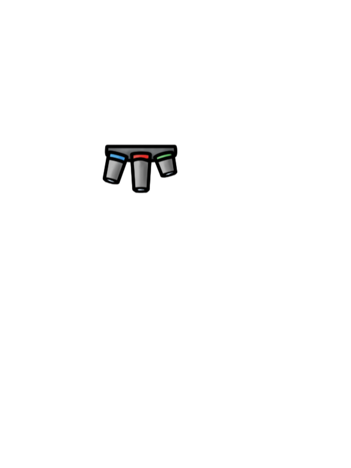
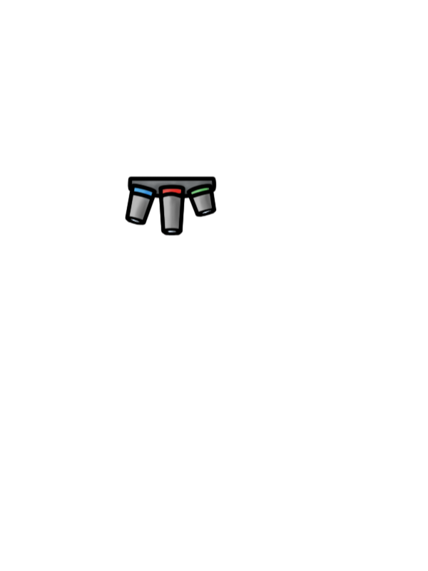

Einstellen des Fokus
Der Grob- und Feintrieb sind Drehregler an den Seiten des Mikrokops. Mit ihnen wird der Objekttisch nach oben und unten verschoben, sodass die Probe in den Brennpunkt des Objektivs gebracht werden kann. Erst dann wird das im Mikroskop sichtbare Bild scharf. Der Grobtrieb verändert dabei den Abstand schneller als der Feintrieb. Probiere es unten aus und finde die Einstellung, in der Du das DLR-Logo scharf sehen kannst!


 


Grobtrieb
Feintrieb